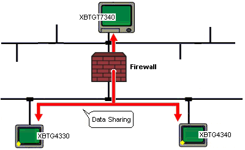
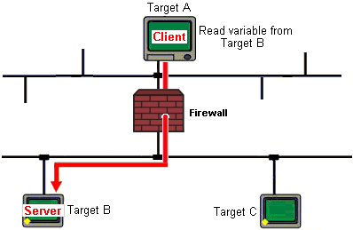

|
|
|
|
|
|
|
|
For target machines to share data through a firewall, you may need to configure the firewall to allow TCP commands through the data-sharing port. The data-sharing port number is defined in the Target's Data Sharing property.

In the Target properties, expand the Data Sharing property and define the Port (1 to 65535).
Configure the firewall so it allows TCP connections using the defined port number, in the direction from client to server, to complete the set up.
The following example illustrates which target is the client and which target is the server, which helps you understand the data-sharing communication flow so you can configure the firewall correctly.

Target B is sharing its variables, so it's a server. Target A is reading variables from Target B, so it's a client. For Data Sharing to work with the firewall, it needs to allow TCP connections over the data-sharing port from the client to the server, or in the direction from Target A to Target B.
Target A: Initiates a TCP connection to port N.
Firewall: TCP port N is open on the firewall to allow the TCP connection.
Target B: Data sharing is enabled on Target B, using Port N. Target B accepts TCP connections from Target A on port N.